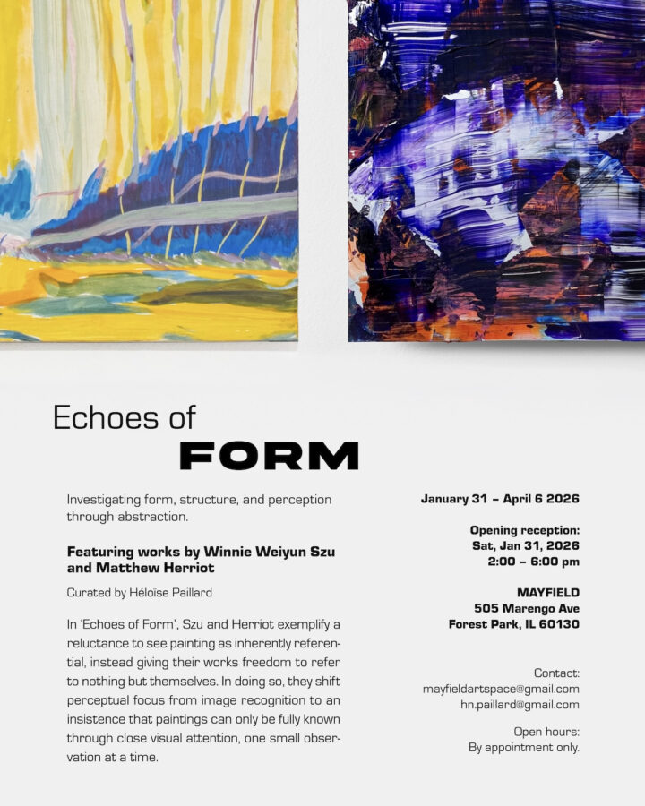

Winnie Weiyun Szu and Matthew Herriot: Echoes of Form
Echoes of Form
Featuring works by Winnie Weiyun Szu and Matthew Herriot
Curated by Héloïse Paillard
Mayfield – 505 Marengo Ave, Forest Park, IL 60130
January 31st – April 6th 2026
Mayfield is pleased to present ‘Echoes of Form’, an exhibition foregrounding visual perception and abstraction through the parallel practices of Winnie Weiyun Szu and Matthew Herriot.
Most often in our visual experience, we look but there is so much that we do not see. We look at a road but we don’t pay attention to the reflections and lights flashing across it; we look at a tree but we don’t notice the dappled light piercing through it; we glance at a building but we miss the softness of one wall in sunlight against another in shade.
An abstract painting, a flat surface containing brushstrokes and colors, free from direct real-world associations and not anxious to communicate anything in particular, is a site for our visual attention to wander and concentrate on details that most often go unnoticed—such as warmer versus cooler hues, compression versus expansion of space, or scattered fragments of light versus hazy modulations in tone. Through attending to how something is rather than what it is, abstraction offers an opportunity to re-engage and reflect on the incredible human capacity for visual perception and to find enjoyment in the richness of that experience.